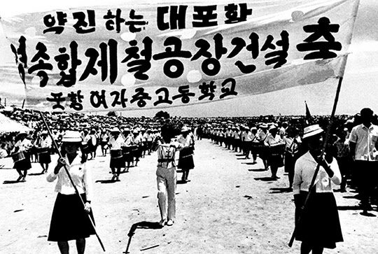
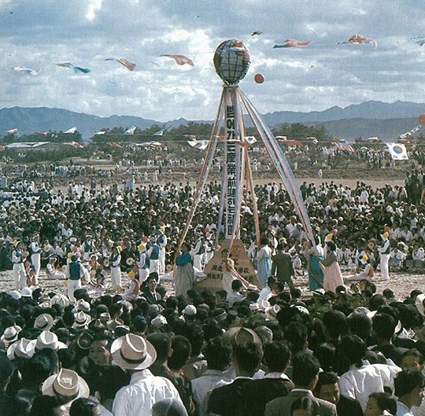
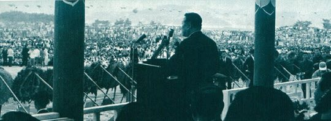

연재일 2014-11-06출처 조선일보 프리미엄조선 연재
10월 3일 종합제철 기공식. 5·16 이후부터만 꼽아도 장장 6년 넘게 끌어온 종합제철소 건설 계획이 마침내 출발의 팡파르만 남겨둔 것 같았다. KISA 계획안을 검토하느라 시일을 끌어온 데다 KISA마저 느긋하게 끌어댄 탓에 기본협정 서명식을 당초 한국정부의 계획대로 열지 못해서 김이 좀 새긴 했으나, 기공식을 10월 3일로 잡았을 때의 명분은 ‘개천절’이었다.
단군 이래 단일 규모의 최대 역사(役事), 단군 이래 최초 종합제철소 건설, ‘산업의 쌀’을 생산하는 국가기간공장 건설. 이것만으로도 개천절에 기공식을 열어야 하는 이유는 충분했다.

기공식을 불과 사나흘 앞두고 서울로 돌아온 박태준은 먼저 경제기획원 장관(부총리) 장기영과 만났다. 그가 박태준에게 KISA와의 최후 서명만 남겨둔 기본계약 서류를 내밀며 12일에 최종 합의가 끝나는 대로 추진위원장 내정자니까 당연히 같이 서명을 해야 한다고 했다. 그러나 KISA의 장삿속을 미심쩍게 여겨온 ‘완벽주의자’가 좀 싸늘하게 말했다.
“그때 가봐야 알겠지만 정식발령을 받지 않으면 서명할 입장이 아니지 않습니까? 그보다 더 근본적인 문제는 내정자로서 아직 기본계약서도 제대로 검토해보지 못했다는 겁니다. 그게 더 시급한 일 같습니다.”
“박 사장, 기공식이 코앞입니다. 기공식 행사는 물릴 수 없습니다. 우선 기공식에 같이 내려갑시다. 기공식에는 당연히 건설추진위원장이 참석해야지요. 며칠 더 여유가 있으니 검토는 좀 천천히 해도 될 것 같은데.”
“아닙니다. 그동안에는 우리 경제부처에서 종합제철의 모든 업무를 공식적으로 책임 있게 관장해왔습니다만, 이제 추진위원장에 임명되면 저는 제철소 건설에 대한 전부를 책임져야 합니다. 그래서 계약내용을 사전에 세밀히 검토하고 나서 그 다음의 일을 결정하도록 하겠다는 것입니다.”
박태준은 주요사항 몇 군데의 손질만 기다리고 있는, 합의에 이른 것이나 다름없는 기본계약 사본을 들고 나와 곧장 미국변호사 자격증을 갖춘 김흥한을 찾아가 검토를 의뢰했다. 이튿날 그는 김흥한의 의견을 들었다. 그의 우려와 일치했다. 합의각서에는 5개국 8개사의 자금조달 책임소재 등에 대한 명시가 없다고 했다. 특히 차관도입에 대해 한국정부가 ‘공동책임’을 진다는 것이 심각한 문제의 소지가 될 수 있다고 했다.
차관이 안 되는 경우에는 한국정부의 무능 탓으로 돌릴 수 있다는 함정이었다. 언제든 KISA가 마음대로 발뺌해도 법률적으로 아무런 제약을 걸 수 없는 약정이었다. 이런 문서에 등장하는 ‘최선을 다 한다’란 말과 똑같은 차원의 치명적 결함이었다.
박태준은 다시 부총리 집무실로 찾아갔다. 기본계약의 심각한 결함에 대해 단단히 확인할 작정이었다. 미리 약속이 안 된 내방객을 비서가 막아섰다.
“지금은 만날 수 없습니다.”
박태준은 호랑이 눈썹을 무섭게 치켜세웠다.
“이봐, 제철소는 국가적 중대사야! 그런데 도대체 진전은 없고 계약서도 엉터리란 말이야! 그래서 내가 직접 물어보려고 왔어!”
그의 목소리가 비서실을 쩌렁쩌렁 울렸다. 다른 사무실의 귀들을 토끼처럼 쫑긋 일으키게 하는 고함이었다.
“아무리 그러시더라도 갑자기 오셨기 때문에 기다리셔야 합니다.”
“뭐? 안에 손님이 있다는 거야!”
“그렇습니다, 들어가신 분이 나가셔야 합니다.”
“웃기지 마! 어제 기분 나쁘게 했다, 이거잖아. 저리 비켜!”
거듭된 그의 고함에 다급한 구둣발 소리가 복도를 울렸다. 옆방에 있던 김성곤이었다. 앞으로 몇 년 뒤에는 정치자금 문제로 박태준을 괴롭힐 이가 갑작스런 소란의 목소리를 알아듣고 부리나케 달려 나온 것이었다.
“어디 한번 봐!”
박태준이 부총리실 문을 열었다.
“야, 임마! 손님이 어딨어! 너희 같은 인간들을 그냥 두면 내가 역적이 되는 거야!”
그의 팔을 붙잡는 손이 있었다.
“박 장군, 참아야 합니다.”
김성곤이었다.
장기영은 한바탕 소동을 일으킨 박태준에게 기공식에 참여하라는 종용을 접지 않았다. 그러나 그는 귀를 닫았다. 이번엔 ‘정식으로 임명되지 않았다’는 명분을 아예 들먹이지 않았다. 종합제철소 건설의 실질적 책임자가 될 사람으로서 사전에 충분한 준비도 없이 무작정 기공식에 참여할 수 없다는 점을 딱 부러지게 밝혔다.
박태준의 기공식 불참 통보는 곧 박정희의 귀에 들어갔다. 10월 2일 오후에 그는 청와대로 불려갔다. 대통령이 화를 참는 표정으로 맞은편에 앉으라고 손짓했다.
“왜 반기를 드나? 이것 봐, 너무 까다롭게 굴지 마. 그렇게 해서 적을 많이 만들면 일도 제대로 끌고 갈 수 없잖아. 복잡하게 생각하지 말고 일단 포항으로 내려가서 기공식부터 원만하게 끝마치고 와.”
박태준은 애써 언성을 낮추는 대통령을 똑바로 쳐다보기가 민망스러웠다. 그의 속엔 두 세력이 겨루고 있었다. 국가대사를 위해 이실직고하느냐, 상대가 없는 자리이니 비판을 자제하느냐. 그는 몇 번이나 망설이다 ‘소신껏’이라는 대통령의 말을 생각하고 소신을 위하여 어렵게 입을 열었다.
“남을 헐뜯을 생각은 추호도 없습니다. 공연한 트집을 잡고 싶은 생각은 더욱 없습니다. 그러나 합의각서에는 중대한 결함이 있습니다. 첫걸음부터 허술하면 국가대사가 어떻게 되겠습니까?”
“무슨 소리야?”
박태준은 찬찬히 기본계약의 허점을 지적했다. 주의 깊게 듣는 박정희의 얼굴이 어두워졌다.
“내가 한번 볼 테니 놓고 가.”

종합제철소건설추진위원장 내정자 박태준은 종합제철공장 기공식이 열리는 포항으로 내려가지 않을 결심이었지만, 대한중석엔 이미 종합제철 실무단이 구성되어 있었다. 9월 11일 대통령이 월간 경제동향 보고를 받는 자리에서 대한중석을 종합제철의 실수요자로 지정한다고 공표한 뒤, 대한중석 고준식 전무가 유럽에 체류 중인 박태준 사장과 연락을 취해 진작부터 구상해 두었던 조직을 즉각 가동했던 것이다. 종합제철 실무단은 고준식 전무 밑에 황경노 관리부장과 노중열 개발실장이 축을 맡았다.
1967년 10월 3일 개천절 오후 2시에 종합제철공장 기공식이 포항시 공설운동장에서 성대히 열렸다. 수천 명의 주민들이 참석한 가운데 경제기획원 부총리, 건설부 장관, 상공부 장관, 재무부 장관 등 정부 각료들이 천막을 지키고 샌드빅 코퍼스사 부사장을 비롯한 KISA 대표단, 전력회사 건설회사 무역회사의 임원들 등 많은 내외 귀빈이 참석했다.
내빈 소개를 맡은 경북지사가 불참한 종합제철추진위원장을 호명하지 않았지만, 주민들과 내외 귀빈들은 아무도 그 점을 의아해하지 않았다. 한 사람만 확실히 알고 있었다. 장기영 부총리. 기공식장으로 이동하는 길에 라디오를 통해 자신의 해임소식을 들었던 그는 대범하게 감격적인 치사를 했다.
“한반도에 하늘과 땅이 열린 지 4300년 만에 우리는 마침내 선진국들의 도움을 받아 종합제철소를 건설하게 되었습니다. 제2차 경제개발 5개년계획의 성패가 이 제철소 건설에 달려 있는 만큼 강철같이 굳센 책임감과 철석같은 단결로 우리의 과업을 성취해 나갑시다.”

그때 박태준은 서울 대한중석 사무실을 지키고 있었다. 장기영에겐 인간적으로 미안한 노릇이었으나 국가대사를 위해 어쩔 도리가 없었다. 당시 그에게 남은 인간적 과제는 해임된 부총리와의 악연 아닌 악연을 푸는 일이었지고, 들이닥친 태산 같은 국가적 과제는 기공식까지 거행했는데도 차관도입이 오리무중에 빠진 종합제철의 암담한 내일을 타개해나가는 일이었다.
2003년 어느 봄날, 박태준은 ‘장기영 부총리와 악연 아닌 악연’을 풀어준 선배가 삼성그룹 이병철 회장이었다며 이렇게 회고했다.
“내가 장기영 부총리와 세게 부딪쳤던 그 일화가 재계에도 두루 퍼졌던 모양이오. 그걸 이병철 회장도 다 들었던 거고. 이 회장은 누구보다 나를 아껴주고 알아주는 선배였는데, 그런 일이 있고 나서 십 년쯤 지났나. 그때가 포철에 초유의 대형 제강사고가 터지기 전이었나 그랬으니, 1977년 4월 초였을 거요. 이 회장이 아침에 안양CC로 나오라고 해서 갔더니 장기영 선배가 같이 계시더군. 그때는 한국일보 사장이셨지.
내가 정중히 인사를 드렸고, 장 선배께서는 ‘포철이 아주 잘 되고 있다니 너무 기분 좋다’며 진심으로 좋아하셨소. 사람의 마음이란 말과 얼굴에 다 묻어나는 거 아니오? 그래서 우리는 라운딩을 하면서 과거의 하찮고 부질없는 응어리를 산산이 쪼개서 웃음 속으로 다 날려버리고 점심에 낮술도 엔간히 마셨지.”
이러고 나서 노인(박태준)은 갑자기 쓸쓸한 표정을 지었다.
“그런데 불과 며칠이나 지난 뒤였나. 내가 호주 출장을 가는 길에 싱가포르에 들러서 우리 현지 특파원들과 만나는 자리로 나갔는데, 그 자리의 한국일보 기자가 무슨 연락을 받더니 장기영 사장께서 급서하셨다는 전언을 하더군. 나는 어안이 벙벙했소. 그분의 웃음소리와 덕담이 귓전에 쟁쟁하니 돌아가셨다는 소식이 믿기지 않았던 건데…. 이렇게 늙어서 다시 돌이켜보아도 말이오, 인생이 길어봤자 얼마나 길다고, 그때 그분도 그렇고 나도 그렇고 부질없던 응어리를 다 풀었으니, 이병철 회장께서 인생의 귀한 선물을 주신 게 아니었나, 이 생각이오.”